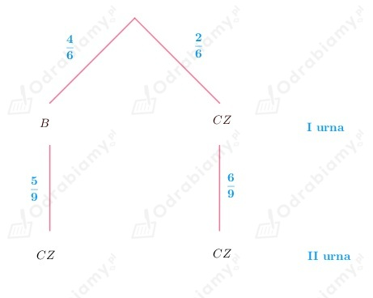
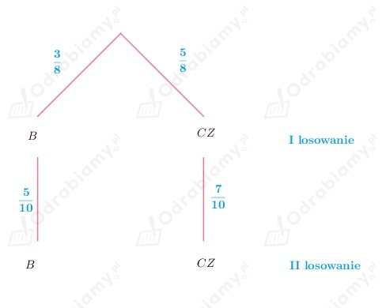
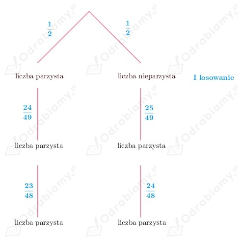
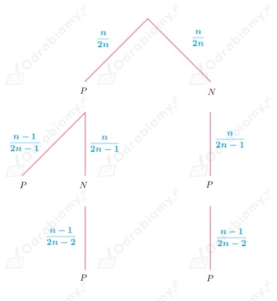

Z treści zadania wiemy, że w sklepie jest n sztuk pewnego wyrobu.
30% tego wyrobu jest pierwszego gatunku, a 70% to wyrób drugiego gatunku.
A - druga sprzedana sztuka będzie pierwszego gatunku
B - pierwsza sprzedana sztuka będzie pierwszego gatunku
Wiemy, że:
Należy wyznaczyć wartość n.
Korzystając ze wzoru na prawdopodobieństwo warunkowe, dostajemy:
wobec tego obliczamy prawdopodobieństwo iloczynu zdarzeń A i B oraz prawdopodobieństwo zdarzenia B.
Zauważmy, że:
oraz
Wobec tego:
Rozwiązujemy równanie:
Z treści zadania wiemy, że rzucamy trzy razy kostką, zatem:
Należy obliczyć prawdopodobieństwo zdarzenia:
A - za trzecim razem wypadła szóstka
a)
Należy obliczyć prawdopodobieństwo warunkowe.
Niech:
B - iloczyn otrzymanych oczek jest liczbą podzielną przez 3
Aby iloczyn otrzymanych oczek był podzielny przez 3, to co najmniej jedna z liczb musi być podzielna przez 3.
Wobec tego skorzystajmy z prawdopodobieństwa zdarzenia przeciwnego:
B' - iloczyn otrzymanych oczek nie jest podzielny przez 3
Wobec tego nie może wypaść liczba podzielna przez 3, a więc mamy takie możliwości: 1, 2, 4, 5.
Obliczamy prawdopodobieństwo zdarzenia B:
Wiemy również, że:
(Skoro trzecią wyrzuconą liczbą ma być 6, to możemy ją wyrzucić na 1 sposób, a pozostałe dwie liczby mogą być dowolne, ponieważ już jest w iloczynie liczba podzielna przez 3 zatem iloczyn będzie podzielny przez 3.)
Wobec tego:
Obliczamy prawdopodobieństwo warunkowe:
b)
Należy obliczyć prawdopodobieństwo warunkowe.
B - suma wyrzuconych oczek jest równa 12
Zauważmy, że aby suma wyrzuconych oczek była równa 12, to musza wypaść:
wobec tego:
A ∩ B - suma wyrzuconych oczek jest równa 12 i za trzecim razem wypadła 6
czyli
Obliczamy prawdopodobieństwo warunkowe:
c)
Należy obliczyć prawdopodobieństwo warunkowe.
B - suma otrzymanych oczek przy dzieleniu przez 3 daje resztę 1
Zauważmy, że liczby:
Zauważamy, że suma:
Zatem, aby suma trzech liczb była podzielna przez 3 z resztą 1, to suma ta musi składać się z:
Zatem:
ponieważ każdą z liczb wyrzucamy na dwa sposoby (mamy dwie możliwości wyrzucenia) oraz mnożymy każdy z tych iloczynów przez 3, bo możemy wyrzucić, np. 3k, 3k, 3k+1 lub 3k, 3k+1, 3k lub 3k+1, 3k, 3k (tak w każdym z trzech przypadków - analogicznie).
Obliczamy prawdopodobieństwo zdarzenia B:
oraz
ponieważ pierwszą i drugą liczbę wyrzucamy na dwa sposoby (mamy dwie możliwości wyrzucenia), a trzecią musi być 6 więc na 1 sposób. Mnożymy pierwszy iloczyn przez 2, bo możemy wyrzucić, np. 3k, 3k+1, 6 lub 3k+1, 3k, 6 (w przypadku, kiedy wyrzucimy dwie podzielne przez 3 i jedną podzielną przez 3 z resztą 1).
Zatem:
Obliczamy prawdopodobieństwo warunkowe:
Z treści zadania wiemy, że z urny w której są 4 kule białe i 2 czarne losujemy jedną kulę i wkładamy ją do drugiej urny.
W urnie drugiej na początku znajdują się 3 kule białe i 5 czarnych.
Jeżeli z pierwszej urny wylosujemy kulę białą, to w urnie drugiej będą 4 kule białe i 5 czarnych, natomiast jeśli z pierwszej urny wylosujemy kulę czarną, to w drugiej urnie będą 3 kule białe i 6 czarnych.
A - wylosowana kula z drugiej urny jest czarna
Przyjrzyjmy się rysunkowi pomocniczemu:

Obliczamy prawdopodobieństwo zdarzenia A:
Z treści zadania wiemy, że w urnie znajdują się 3 kule białe i 5 kul czarnych. Z urny tej losujemy jedna kulę, następnie zwracamy ją do urny i dorzucamy 2 kule koloru wylosowanej wcześniej kuli. Kolejno losujemy jeszcze jedna kulę.
Jeżeli za pierwszym razem wylosujemy kule białą, to losując drugi raz w urnie będzie 5 kul białych i 5 kul czarnych, natomiast jesli za pierwszym razem wylosujemy kulę czarną, to losując kolejny raz w urnie będą 3 kule białe i 7 kul czarnych.
A - dwie wylosowane kule są tego samego koloru
Przyjrzymy się drzewku obrazującemu losowanie, które nas interesuje:

Obliczamy prawdopodobieństwo zdarzenia A:
Z treści zadania wiemy, że ze zbioru {1, 2, 3, ..., 50} wybieramy losowo jedna liczbę.
Następnie z pozostałych liczb losujemy jeszcze dwie liczby.
A - za drugim razem wylosowano liczbę parzystą
Przyjrzyjmy się wynikom losowania sprzyjającym zdarzeniu A:

Obliczamy prawdopodobieństwo zdarzenia A:
Z treści zadania wiemy, że w dwóch urnach są po 4 kule czarne i rozmieszczamy w tych urnach jeszcze 6 kul białych.
Kolejno z losowo wybranej urny losujemy jedna kulę. Należy sprawdzić, w jaki sposób rozmieścić białe kule w urnach,
aby prawdopodobieństwo wylosowania kuli białej było największe.
Niech:
A - wylosowano kule białą
n - liczba kul białych, która trafiła do I urny
(6-n) - liczba kul białych, która trafiła do II urny
Wobec tego w I urnie są 4 kule czarne i n kul białych (łącznie 4+n kul), a w urnie II są 4 kule czarne i 6-n kul białych (łącznie 4+6-n=10-n kul).
Wybór urny pierwszej i urny drugiej jest tak samo prawdopodobny.
Zatem:
Zauważmy, że:
Zatem wartość prawdopodobieństwa zdarzenia A będzie największa, jeśli wartość funkcji:
będzie największa.
Wobec tego sprawdzamy dla jakiego n wartość funkcji f jest największa.
Zauważamy, że funkcja f jest funkcją kwadratową, której wykresem jest parabola ramionami skierowana w dół, więc funkcja przyjmuje wartość największą w wierzchołku paraboli. Wyznaczamy wartość pierwszej współrzędna wierzchołka paraboli:
Wobec tego wnioskujemy, że wartość prawdopodobieństwa zdarzenia A jest największa, gdy n=3 (liczba kul białych w pierwszej i drugiej urnie jest taka sama i wynosi 3).
Obliczamy wartość prawdopodobieństwa dla n=3:
Z treści zadania wiemy, że w puli jest 2n pytań (n>1). Student na egzaminie losuje 2 pytania.
Jeżeli odpowie na nie dobrze, to zdaje egzamin, jeżeli odpowie na każde źle, to nie zdaje egzaminu.
Natomiast, jeżeli odpowie na jedno błędnie, to wyciąga dodatkowe pytanie i jeśli odpowie poprawnie, to zdaje egzamin.
Zakładamy, że student umie odpowiedzieć poprawnie na n pytań, a zatem na połowę pytań z puli.
A - student zda egzamin
Aby student zdał egzamin, to musi wylosować:
Wobec tego narysujmy drzewko obrazujące wyniki sprzyjające zdarzeniu A:

P - potrafi odpowiedzieć na pytanie
N - nie potrafi odpowiedzieć na pytanie
Obliczamy prawdopodobieństwo zdarzenia A:
Z treści zadania wiemy, że w rzucie niesymetryczna kostką prawdopodobieństwo uzyskania co najwyżej czterech oczek jest równe 0,6, natomiast co najmniej czterech oczek wynosi 0,8.
A - uzyskano cztery oczka w rzucie ta kostką
B - uzyskano co najwyżej cztery oczka w rzucie tą kostka (1, 2, 3 lub 4)
C - uzyskano co najmniej cztery oczka w rzucie tą kostką (4, 5 lub 6)
Wiemy, że:
Należy obliczyć:
Zauważmy, że:
bo jest to zdarzenie pewne (rzucając kostką dostaniemy liczbę oczek równą 1, 2, 3, 4, 5 lub 6).
Korzystając ze wzoru:
dostajemy:
Z treści zadania wiemy, że:
Należy obliczyć prawdopodobieństwo warunkowe:
Z tego, że:
dostajemy:
Natomiast z tego, że:
dostajemy:
Wnioskujemy, że: